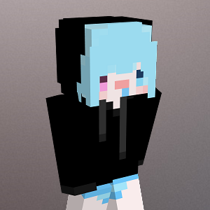

開發人員
建築師
羊羊 Discord:Sheep羊#2455
流浪建築師，沒有特定風格，只要有圖都能蓋。有報酬有進度，沒有報酬自由心證
同樣也是喜歡半夜蓋建築的肝帝，擅長重複性大型建築。很會挑選時間，伺服器有東西蓋的時候都沒空，主機維修的時候都很閒。防疫期間想當社會亂源，幸好沒有實現

建築師
落葉 Discord:ʟᴜᴏʏᴇʜ.#3675
爆米花好吃，尤其是鹹甜口味
很可愛的建築師.w.擅長建築小村落，打造的跟他一樣溫馨，是比較晚期才加入的好夥伴~

策劃
漆天 Discord:SevenCat#4118
我是漆天，大家好.w.
存在感蠻低的可愛小策劃，負責規劃各種玩法以及活動，也負責伺服器的測試~有他才能找出伺服器的bug~
建築師
沒睡飽 Discord:OoF#6336
極度社恐的長袖怪人，有時候好忙有時候好閒導致的作息和出了車禍差不多
永遠都睡不好因而得名，擅長小型建築以及探險活寶，每次上線蓋一蓋就會睡著，有人要傳授睡得飽的秘訣嗎?

被同班同學的阿虎邀請到終焉幻域內，擔任遊戲劇情的策劃，希望進來遊玩的玩家會喜歡我編畫出來的故事！
策劃
Miye Discord:miye#8001
被同班同學的阿虎邀請到終焉幻域內，擔任遊戲劇情的策劃，希望進來遊玩的玩家會喜歡我編畫出來的故事！
看遍各大小說，擁有豐富的想像力，負責撰寫伺服器所有故事!正在被阿虎一步一步的帶入坑插件